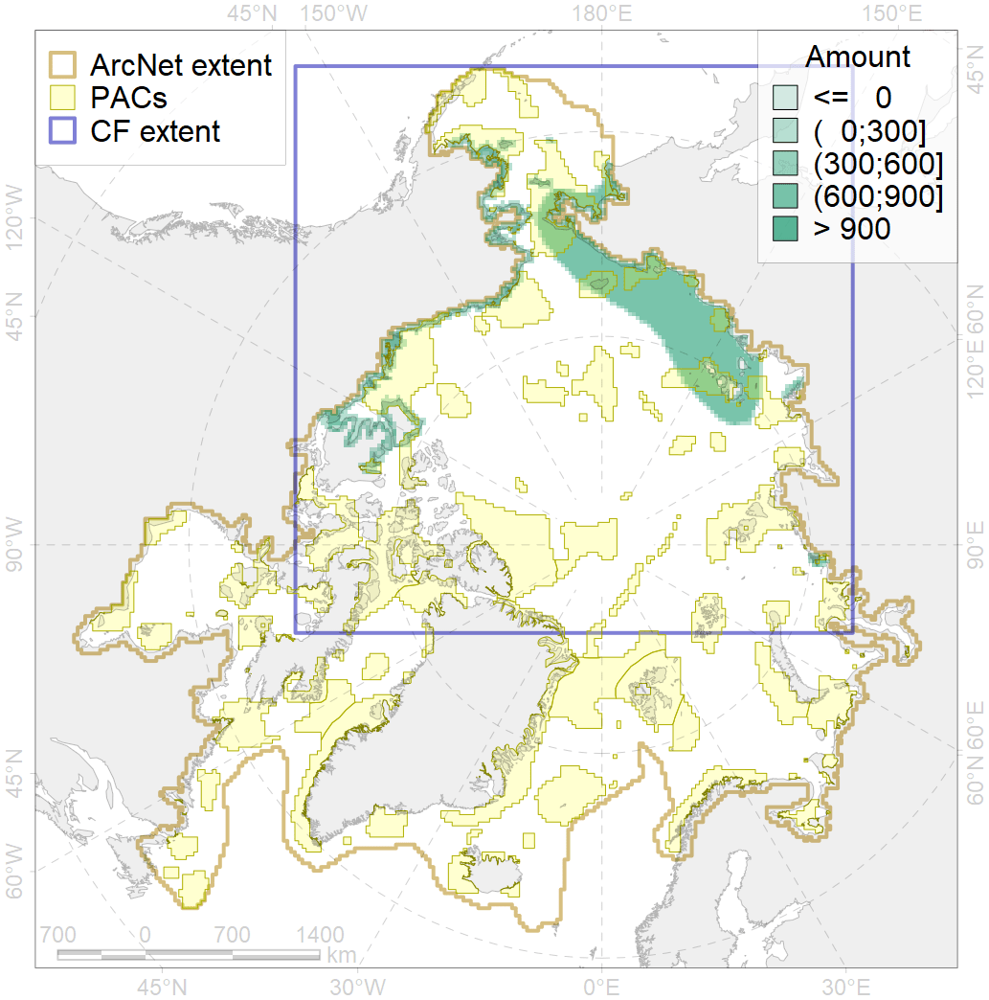
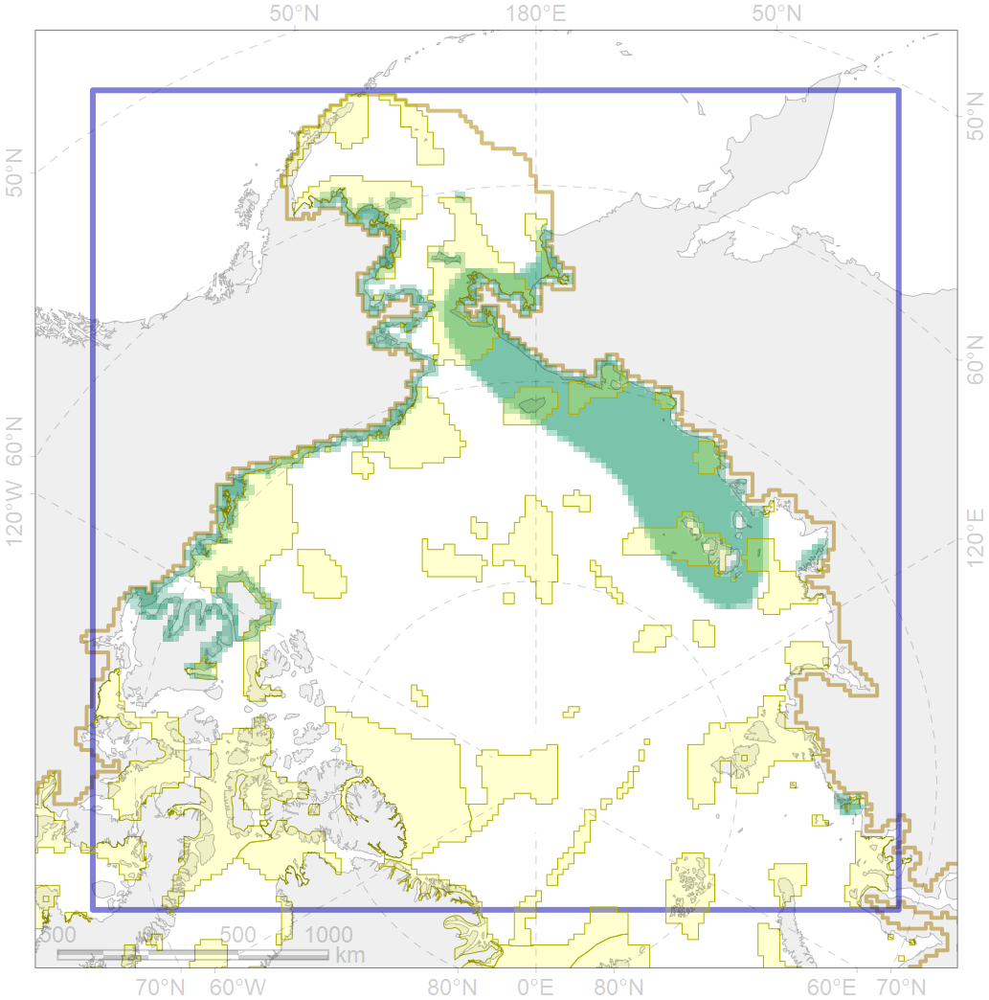

6066

| CF code | 6066 |
| CF name | Common eider (Somateria mollissima v-nigrum) breeding&moulting grounds |
| Time Period | 2017 |
| Source(s) | Smith et al 2017 |
| Seasonality | May-August |
| Depth Horizon | <50 m |
| Methodology | Field Data |
| Use Restrictions | Open source |
| Author Name | Gavrilo, Tertitski |
| Notes | |
| Scenario’s Target | 0.336 |
| Target Achievement | 0.342 (Scenario: 101.8%) |
| PAC | Share of the Total Amount within the PAC | Share of the Target Achievement for the ArcNet | PAC’s Contribution to the Target Achievement |
|---|---|---|---|
| 3 | 0.9%2.5% | 2.5%6.9% | 2.4%6.8% |
| 4 | 0.7%1.1% | 1.7%2.7% | 1.6%2.6% |
| 5 | 8.3%9.9% | 23.8%27.9% | 23.4%27.4% |
| 6 | 0.1%0.4% | 0.2%1.2% | 0.2%1.2% |
| 7 | 3.2% | 9.4% | 9.2% |
| 8 | 3.3%3.4% | 7.7%7.8% | 7.6%7.6% |
| 9 | 0.6%0.6% | 1.1%1.1% | 1.1%1.1% |
| 10 | 1.6%1.6% | 3.7%3.7% | 3.6%3.6% |
| 11 | 5.2%5.2% | 15.3%15.3% | 15.1%15.1% |
| 12 | 1.4% | 3.6% | 3.5% |
| 15 | 0.1%0.1% | 0.4%0.4% | 0.4%0.4% |
| 60 | 0.2%0.9% | 0.5%0.8% | 0.5%0.8% |
| 61 | 0.0% | 0.0% | 0.0% |
| 62 | 2.0%2.9% | 5.2%6.1% | 5.1%6.0% |
| 63 | 0.3%0.3% | 0.8%0.9% | 0.8%0.9% |
| 64 | 0.3%0.4% | 0.8%0.9% | 0.8%0.9% |
| inner | 28.4%34.0% | 76.7%88.8% | 75.3%87.1% |
| outer | 71.6%78.0% | 25.2%41.7% | 24.7%40.9% |
| † supplement values are for area consistence whereas principal values are for Accenter compatible gridded stats |